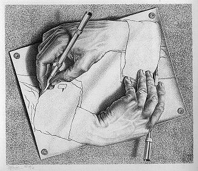

Ethical ZEN

Drawing Hands, M.C. Escher" style="width: 50%; height: auto; display: block; margin-left: auto; margin-right: auto;">Inclusivity
Zen does not leave out any part of ourselves, we bring the practice to all aspects of ourselves, and our lives. It emphasises working with the reality of who we are and ends up encouraging us to discover the kind of life we'd like to live. This is a personal discovery, for each individual, as no one else can do the practice for us or give us the answer book to life.
No one is expected to fit any particular mould in Zen. Practice tends to reveal how connected we are to others, how inseparable we are, and equally, how unique each of us is. The practice doesn't make us all the same, equanimous, imperturbable, replicas of each other. Rather, it makes space for each of us to shine in our own way, offering ourselves and our gifts to the world. It develops in us the courage to be ourselves in the best way possible. This doesn't mean being reckless or selfish or indifferent; practice that leads to that is not true Zen practice.
Inclusivity is in both how we treat ourselves and how we treat others. The reality is that self-inclusion is not different to other-inclusion. Friendliness is not just in being considerate, or enjoying each others company, it reflects the truth that we are all in this together. And so we hold each other with respect, because we acknowledge this truth. The practice tends to fling wide open the doors to mutual appreciation, understanding, affection, and care.
Inclusion is foundational in the practice of Zen at every level. This means we pay attention to when we make assumptions about, or feel discomfort towards, or extend favour towards, others on the basis of — race, religion, age, gender, sexuality, disability, neurodiversity, class, housing status, socioeconomic status, fame, wealth, politics, employment status, education level, physical appearance, dress, ethnicity — to name but a few. We can get curious about our responses and ask: is this fair? is it helpful?
The Zen Precepts
How we live and our ethical framework for that is something each of us has to work with and uncover for ourselves. Contemplating precepts helps us tease out what our values are, rather than telling us what to think. This doesn't mean it's a free-for-all; it means we each feel our way into it, and, wherever we are causing unnecessary harm or suffering, this requires careful attention. The basis of the precepts is non-harming, and doing good, both for others and for ourselves.
Here are two versions of the precepts used in two different Western Zen lineages. One is our own, from Ordinary Mind Zen teacher Elihu Genmyo Smith, and the other is from the Diamond Sangha. It should be noted that the actual wordings used for the precepts, and for vows more generally, varies widely, as do the styles of expression. Different versions can help us to expand our vision as well as usher us toward the discovery of what is essential and has meaning and power for us personally.Taking Jukai
For those wishing to make a commitment to this path, to non-harming, to practice, and to the clarity of Zen training, there is the process and ceremony of Jukai. Jukai is an expression of dedication to practice and to the growth and maturity that comes with bringing ethical reflection and self-awareness into one's life.
The ceremony allows for the expression of this dedication and acknowledges the sense of appreciation with which the person holds Zen Buddhist practice, and it holds them, and manifests as their unfolding life. The ceremony takes place after a period of training with the precepts, exploring them one by one to see how they arise in everyday life. The student receives a Dharma name and rakusu which can be worn during periods of practice and in roles such as Chaplaincy.
Books
When taking Jukai people typically explore one or more books. Here are some of the great books which are dedicated to the precepts or have chapters on the precepts or Jukai in general. The idea is to find what speaks to you at this point in time. They have different styles and sensiblities and what appeals to you now, or touches you, or reaches you, can change over time. You can also incorporate books on ethics from outside Zen or Buddhist traditions.
Waking up to what you do, Diane Eshin Rizzetto.Everything is the Way, Elihu Genmyo Smith
The Mind of Clover, Robert Aitken
Opening to Oneness, Nancy Mujo Baker
The heart of being, John Daido Loori
Being Upright, Tenshin Reb Anderson